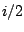
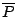
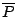

Next: Fourier analysis and resynthesis
Up: Filters
Previous: Making and using all-pass
Contents
Index
- A recirculating elementary filter has a pole at . At what angular
frequency is its gain greatest, and what is the gain there? At what angular
frequency is the gain least, and what is the gain there?
- A shelving filter has a pole at 0.9 and a zero at 0.8. What are: the DC
gain; the gain at Nyquist; the approximate transition frequency?
- Suppose a complex recirculating filter has a pole at
 . Suppose
further that you want to combine its real and imaginary output to make a
single, real-valued signal equivalent to a two-pole filter with poles at
and . How would you weight the two outputs?
. Suppose
further that you want to combine its real and imaginary output to make a
single, real-valued signal equivalent to a two-pole filter with poles at
and . How would you weight the two outputs?
- Suppose you wish to design a peaking filter with gain 2 at 1000 Hertz and
bandwidth 200 Hertz (at a sample rate of 44100 Hertz). Where, approximately,
would you put the upper pole and zero?
- In the same situation, where would you put the (upper) pole and zero
to remove a sinusoid at 1000 Hertz entirely, while attenuating only 3 decibels
at 1001 Hertz?
- A one-pole complex filter is excited by an impulse to make a tone at 1000
Hertz, which decays 10 decibels in one second (at a sample rate of 44100
Hertz). Where would you place the pole? What is the value of ``q"?
Next: Fourier analysis and resynthesis
Up: Filters
Previous: Making and using all-pass
Contents
Index
Miller Puckette
2006-12-30